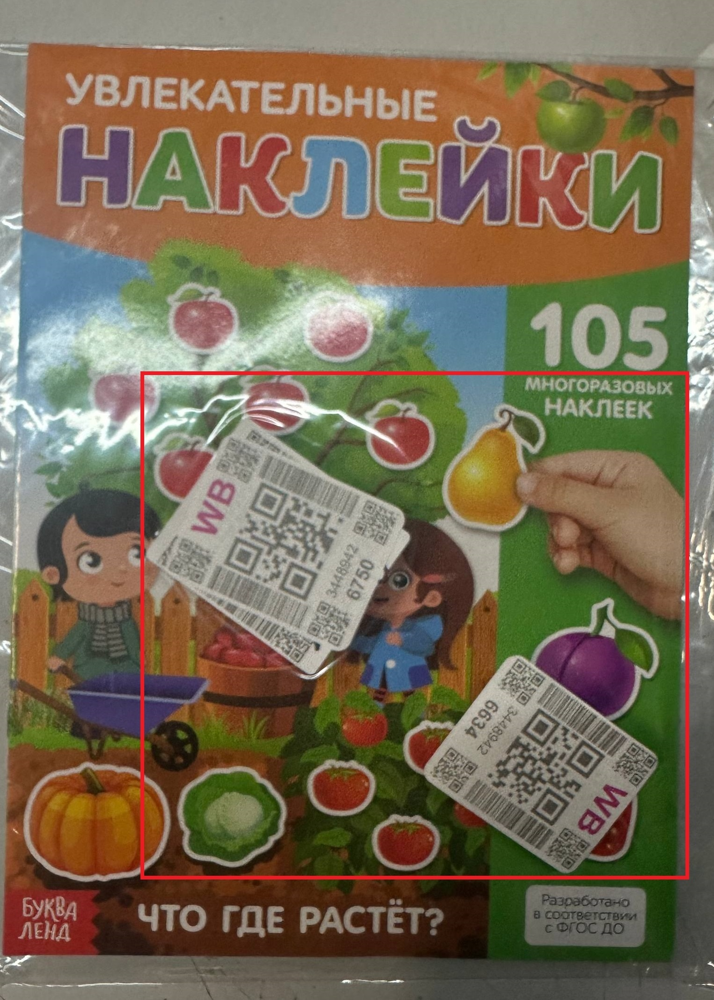
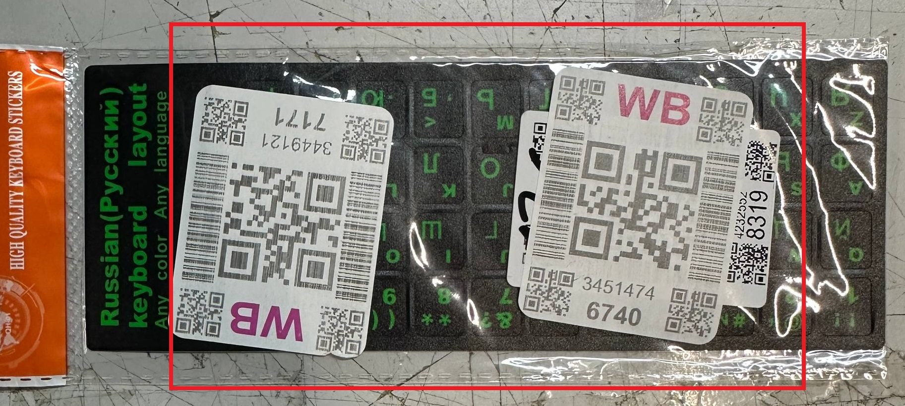
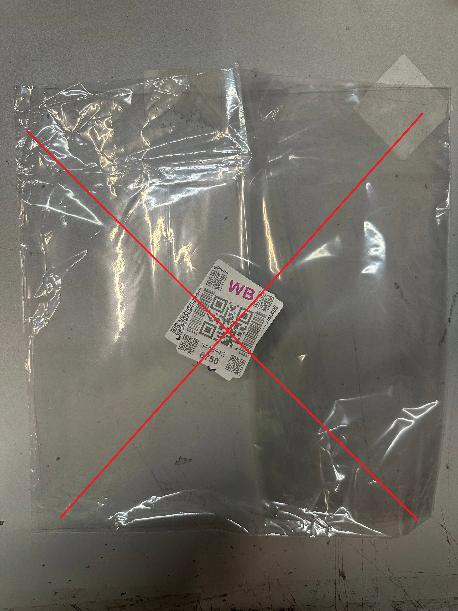
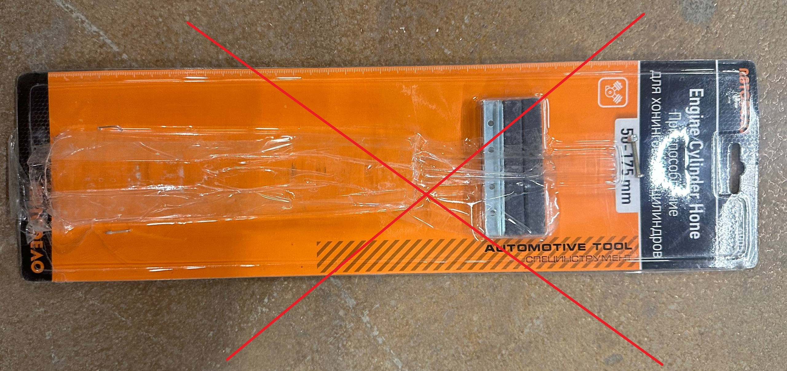
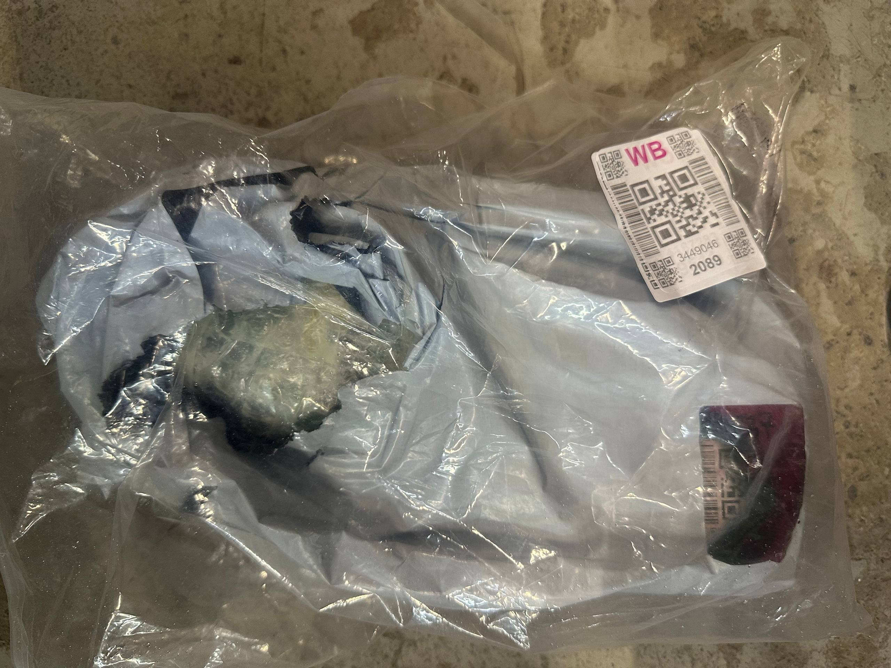
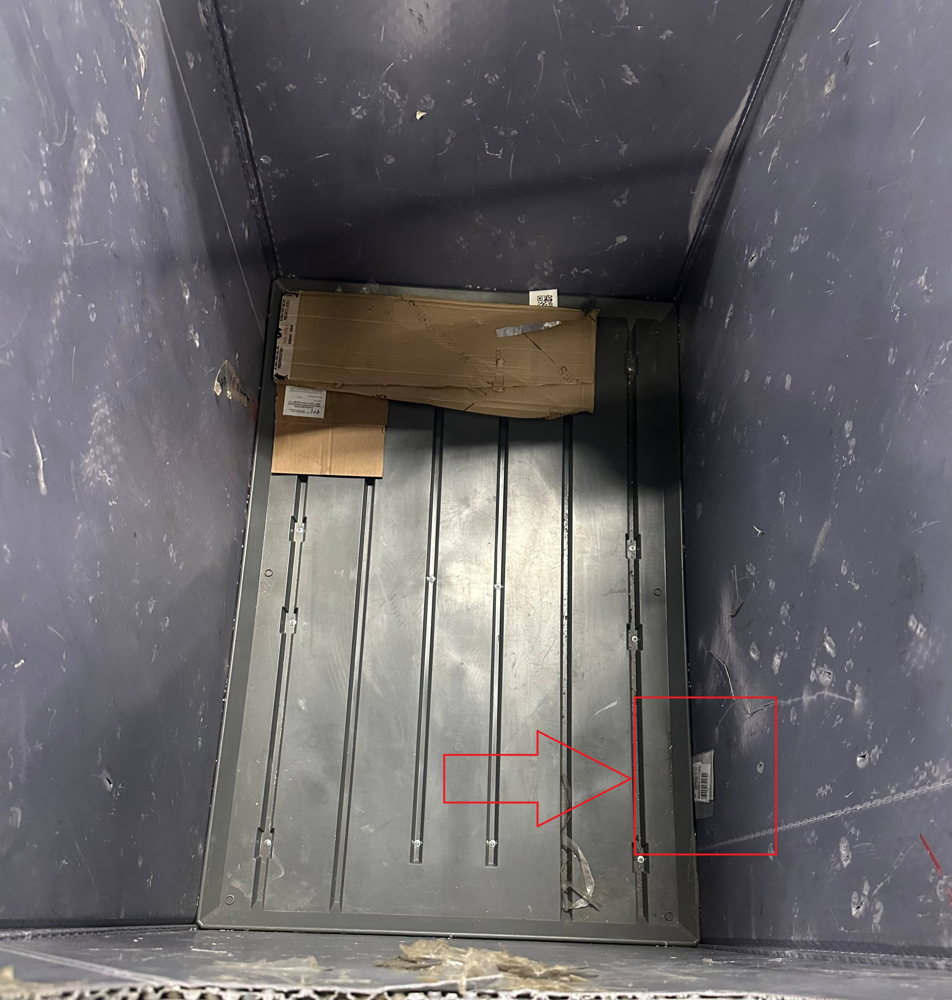
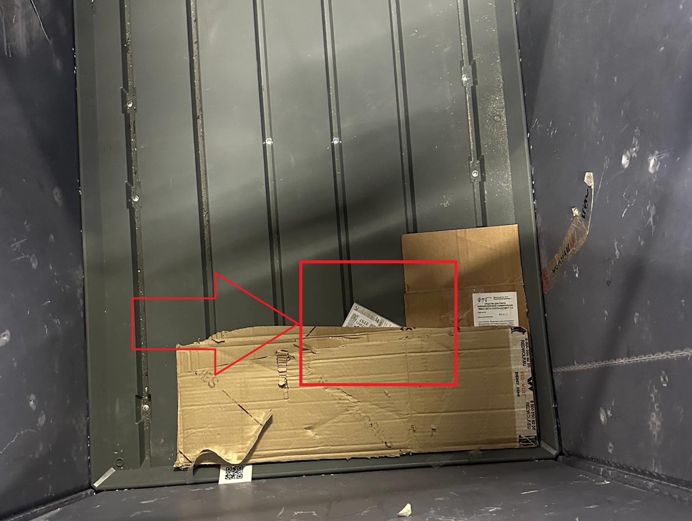

Операция "Сортировка МП"
Оборудование, необходимое для работы на сорт МП
Для работы на участке "сортировка МП" нам понадобится следующее оборудование:
-
Сканер Urovo SR5600

-
Телефон на базе Android
-
Крепление (резинки)

* Сканер можно получить у старшего смены.
Подготовка квадрата сортировки МП для работы
Перед началом работы необходимо подготовить квадрат сортировки МП. Для этого нужно выставить тары на квадрате сортировки МП. Их количество должно соответствовать количеству направлений сортировки.
Каждая выставленная тара должна быть физически пустая.
Затем следует убедиться, что тара чистая и программно. Для этого воспользуемся Инструкцией по очистке сетки
После проверки/очистки тары, необходимо припарковать тару программно на своё рабочее место. Для этого необходимо зайти в модуль «Сортировка» > «Сорт в сетки (тест) 2».

Затем следует отсканировать QR МХ своего квадрата сортировки МП.
На экране появится надпись «Найти сетку с вещами для сорта?». Следует нажать кнопку «НЕТ».
Затем на телефоне следует нажать кнопку «Уменьшение громкости». На экране появляется надпись, требующая отсканировать МХ парковки для парковки сетки:
Сканируем QR места парковки тары для работы, затем саму пустую тару.
По примеру парковки одной тары, проделать те же действия необходимо для парковки остальных тар. После этого квадрат сортировки МП будет готов к работе.
Начало работы на сортировке МП
Для начала работы необходимо выполнить следующие действия:
-
Заходим в модуль «Сортировка» > «Сорт в сетки (тест) 2»
-
Сканируем QR/МХ квадрата сортировки МП, на котором будете работать.
-
На экране с вопросом «Найти сетку с вещами для сорта?» нажимаем «НЕТ».
Из тары, взятой в работу, берем товар и сканируем ВБ стикер, находящийся на нём.
После этого на экране телефона отобразится номер тары, в которую необходимо поместить товар. Кладём товар в требуемую тару и повторяем аналогичные действия с другими товарами, находящимися в таре.
После заполнения тары, стоящей на парковке, её необходимо программно отвязать. Для этого выполняем следующие шаги:
-
1. Нажимаем кнопку «Уменьшение громкости на телефоне».
-
2. Сканируем QR МХ места парковки сменяемой тары
-
3. Сканируем шильдик сменяемой тары
-
4. Сканируем шильдик тары, подготовленной для замены.
Основные ошибки при работе на сортировке МП:
-
Сортировка товара с двумя ВБ стикерами. При обнаружении такого товара пикать любой из стикеров КАТЕГОРИЧЕСКИ ЗАПРЕЩЕНО. Такой товар необходимо отнести старшему.
 -
Сортировка пустых пакетов/коробок. Пустые пакеты/коробки мы не сканируем, а сразу относим старшему.
 -
Сортировка бракованного товара. Товар может быть разбит/разлит. При обнаружении бракованного товара также обратитесь к старшему и следуйте его инструкциям. Примеры товара с браком показаны ниже.
 -
При завершении сортировки товара из тары, многие сотрудники не проверяют тару на наличие мелкого товара. Примеры показаны ниже:
